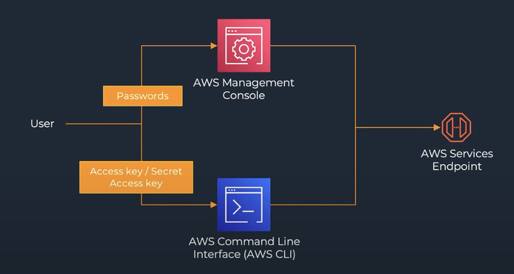

Week 1 Worklog
Date: 2025-09-09
Status: “Done”
Week: “Week 1”
Lecture Notes
What Is Cloud Computing?
- The on-demand delivery of IT resources over the Internet with pay-as-you-go pricing.
Benefits of Cloud Computing
- Pay only for what you use, optimizing cost efficiency.
- Accelerate development through automation and managed services.
- Scale resources up or down as needed.
- Deploy applications globally in minutes.
Why AWS?
- AWS has been the global cloud leader for 13 consecutive years (as of 2023).
- Unique culture, vision, and long-term customer obsession.
- AWS pricing philosophy: customers should pay less over time for the same resources.
- Every AWS Leadership Principle is focused on delivering real customer value.
How to Get Started with AWS
- There are many learning paths—self-study is completely possible.
- Register an AWS Free Tier account to explore.
- Recommended course platforms:
- Explore AWS learning paths:
AWS Infrastructure
Data Centers
- Each data center can host tens of thousands of servers.
- AWS builds and manages its own custom hardware for efficiency and reliability.
Availability Zone (AZ)
- One or more physically separate data centers within a Region.
- Each AZ is designed for fault isolation.
- Connected via low-latency, high-throughput private links.
- AWS recommends deploying workloads across at least two AZs.
Region
- A Region contains at least three Availability Zones.
- There are currently 25+ Regions worldwide.
- Regions are interconnected by the AWS backbone network.
- Most services are Region-scoped by default.
Edge Locations
- Global network of edge sites designed to serve content with minimal latency.
- Used by services such as:
- Amazon CloudFront (CDN)
- AWS WAF (Web Application Firewall)
- Amazon Route 53 (DNS Service)
AWS Management Tools
AWS Management Console
- Log in as Root User or IAM User (requires 12-digit Account ID).
- Search and access individual service dashboards.
- Support Center allows you to open support cases directly.
AWS Command Line Interface (CLI)
- Open-source command-line tool for interacting with AWS services.
- Provides functionality equivalent to the Console.

AWS SDK (Software Development Kit)
- Simplifies integration of AWS services within applications.
- Handles authentication, retries, and data serialization/deserialization automatically.

Cost Optimization on AWS
- Choose the right resource types and Regions.
- Use pricing models such as Reserved Instances, Savings Plans, and Spot Instances.
- Remove or schedule idle resources.
- Leverage serverless architectures.
- Continuously review and improve cost efficiency with AWS Budgets and Cost Explorer.
- Tag resources with Cost Allocation Tags for department-level tracking.
AWS Pricing Calculator
- Create and share cost estimates for common services.
- Pricing varies by Region.

AWS Support Plans
- Four tiers: Basic, Developer, Business, and Enterprise.
- Plans can be upgraded temporarily during critical incidents.
Exploration
AWS Well-Architected Framework
- A set of design principles and best practices for building reliable, secure, efficient, and cost-effective cloud architectures.
- The Well-Architected Tool in the Console provides self-assessments and improvement guidance.
Hands-On Labs
Lab 01 – AWS Account & IAM Setup
- Create an AWS Account → 01-01
- Configure Virtual MFA Device → 01-02
- Create Admin Group and Admin User → 01-03
- Account Authentication Support → 01-04
Lab 07 – AWS Budgets & Cost Management
- Create Budget by Template → 07-01
- Create Cost Budget Tutorial → 07-02
- Create Usage Budget → 07-03
- Create Reserved Instance (RI) Budget → 07-04
- Create Savings Plans Budget → 07-05
- Clean Up Budgets → 07-06
Lab 09 – AWS Support Plans
- AWS Support Packages → 09-01
- Types of Support Requests → 09-02
- Change Support Package → 09-03
- Manage Support Requests → 09-04